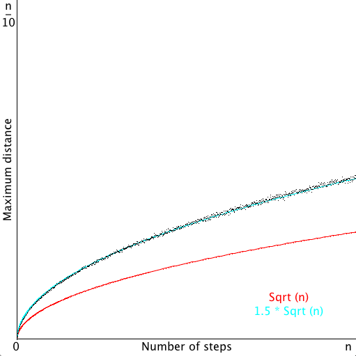

Disponível em http://introcs.cs.princeton.edu/java/32class/
Primeiramente, vamos analisar o que ocorre com a distância máxima média dos RandomWalkers para vários valores de N:
Os valores computados são uma média das distâncias máximas obtidas em 1000 simulações para cada valor de N.
Como se pode observar, as distâncias máximas médias crescem de forma proporcional a raiz quadrada da quantidade de passos. Com algum trabalho manual, pude notar que o crescimento é muito próximo a 1,5 * raiz(N).